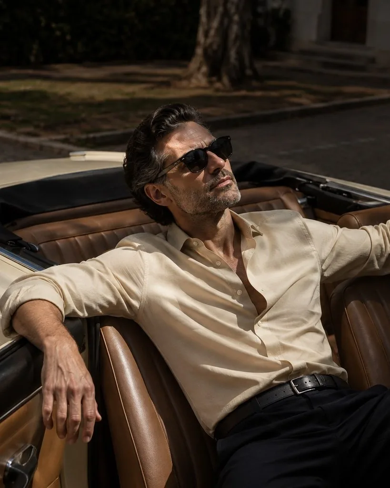
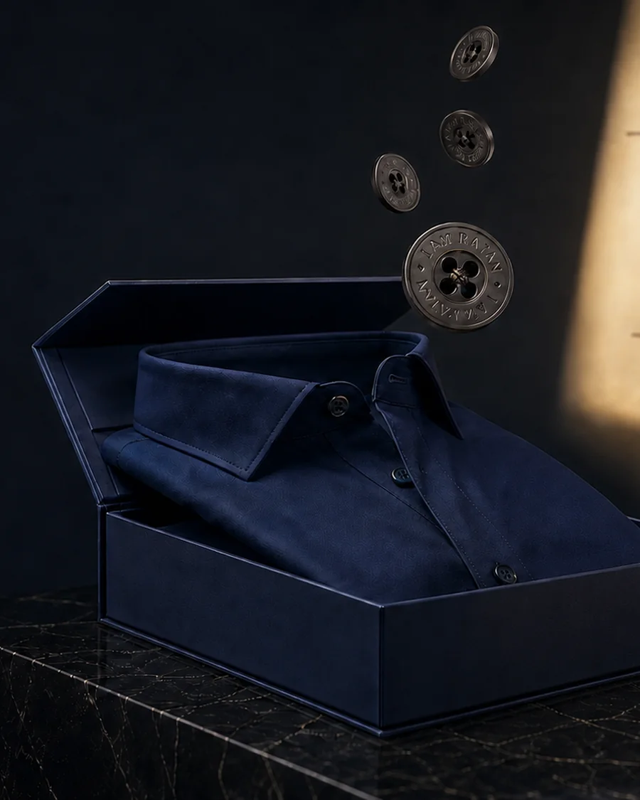
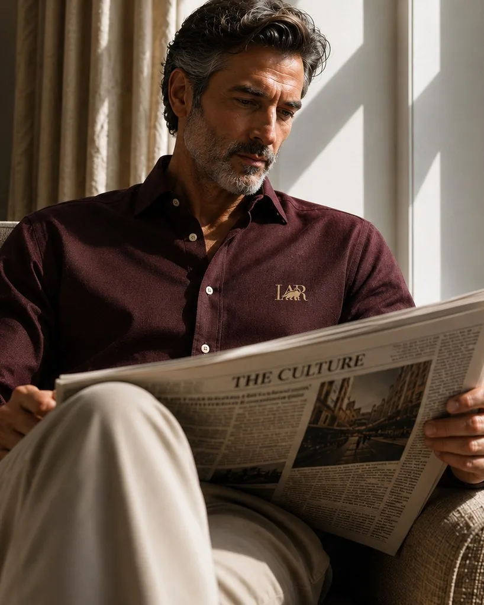
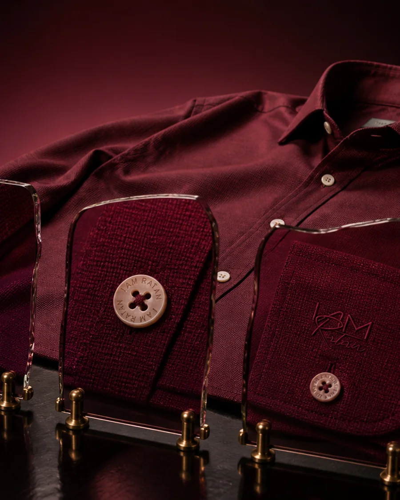
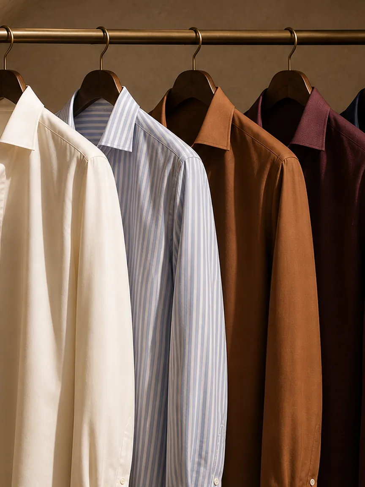
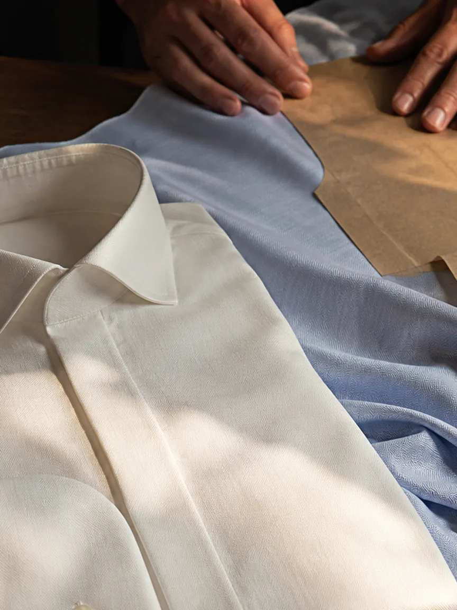
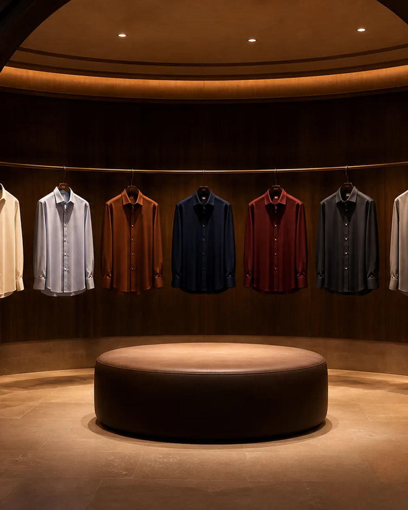

Autumn winter 2025
Shirts that speak silence.
Twenty-seven cloths, cut in five sizes, finished by hand.

Ready to order
Ready to Wear
The house's own cloths, cut in five sizes and finished by the same hands. Choose one and it ships.
See the range→
By appointment
Bespoke
A pattern cut for one person alone, from a fit taken once. Every commission begins with a conversation.
Explore bespoke→The journal
All entries →



By invitation
Ratan's Circle
A small, invited group of the house's closest clients, with personalised access, experiences and privileges. Membership is not open. The house extends it.